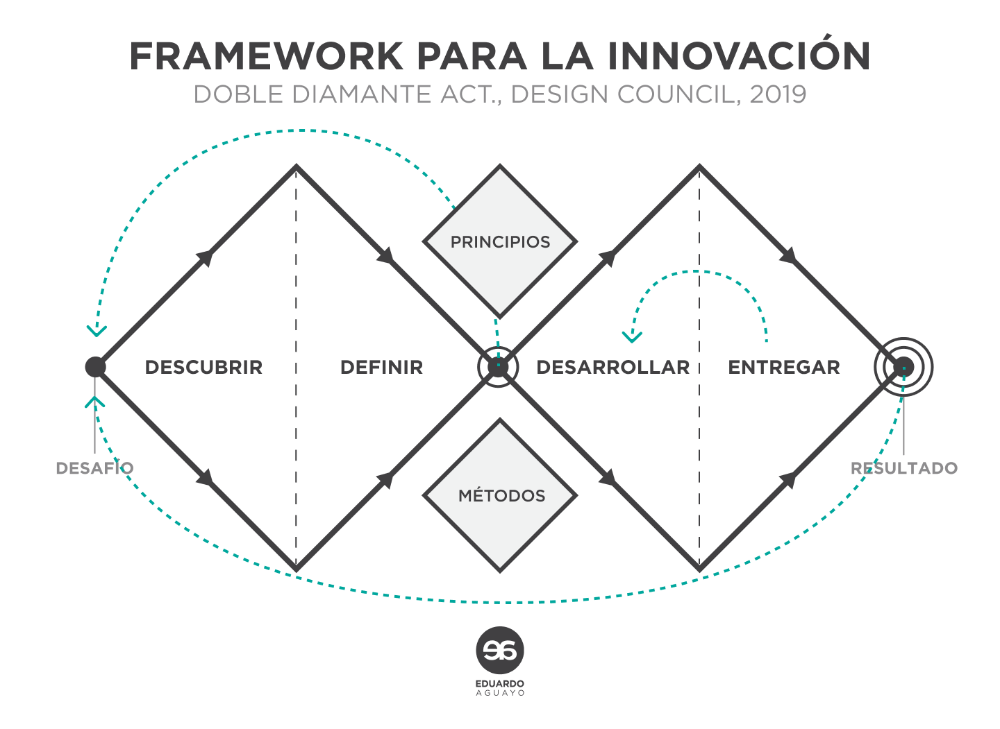
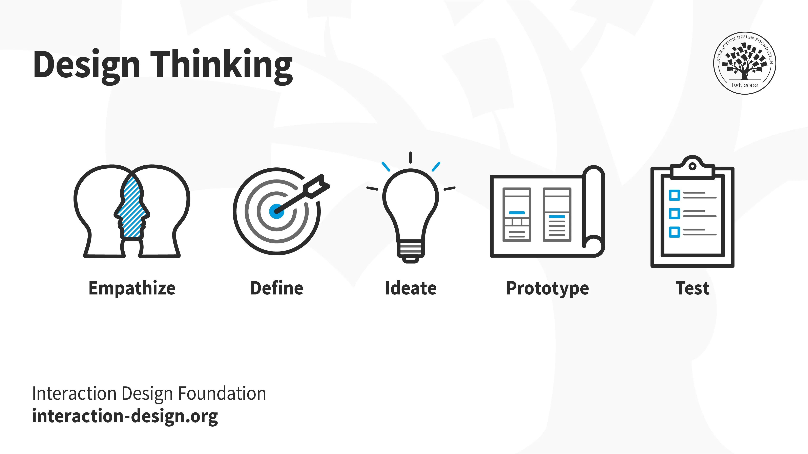

¿Cuáles son las metodologías más comunes de UX/UI?
Doble diamante
Historía del Doble Diamante
Doble diamante fue creado, en 2004, por el Design Council (Reino Unido).
Es proceso innovador de diseño, cuyo gran atractivo, en buena medida, radica en que puede emplearse tanto por diseñadores expertos como por personas que no se dedican al diseño.
Este modelo pretende ayudarle a las personas a resolver problemas complejos respondiendo a una diversidad de necesidades concretas.
El modelo surgió después de una serie de estudios especializados realizados por el Design Council. En estos, analizaron cómo solucionaban problemas complejos empresas enormes (estudiaron, por ejemplo, cómo trabajaba LEGO, Sony, etc.).
Al analizar cómo trabajaban algunas de las empresas más grandes y exitosas del mundo, descubrieron que, prácticamente, todas seguían determinados pasos o fases. Cada una llamaba a estas etapas de forma distinta, pero todas las empresas las empleaban. Así, el Design Council decidió articular un modelo que sintetizara lo que observó en sus estudios. El resultado fue el Doble diamante.
¿Qué es el Doble diamante?
Se llama Doble diamante porque el diagrama en el que se representa este modelo corresponde, precisamente, a la imagen de un par de figuras de diamante. Estas dos figuras se sitúan al centro de un círculo y están estrechamente ligadas.

¿Cuáles son las fases del doble diamante?
Este modelo se sustenta en cuatro pasos o fases: en las dos primeras se “inaugura” o define el problema a través de múltiples hipótesis e ideas asociativas; en las dos últimas se articula lo surgido en el “primer diamante”, se definen con claridad los puntos concretos con los que trabaremos y, sobre todo, se crea una solución final.
Estas cuatro fases tienen nombres específicos:
- Empatizar o descubrimiento
- Definición
- Desarrollo
- Entrega
Asimismo, estas cuatro fases se relacionan estrechamente con dos formas de pensamiento: pensamiento divergente y pensamiento convergente.
Pensamiento divergente
El pensamiento divergente corresponde a la primera parte de los diamantes. En esta fase se trabaja con asociaciones poco convencionales. Podríamos decir que es la parte más “lúdica” y libremente creativa del proceso.
Pensamiento convergente
El pensamiento convergente corresponde a la segunda parte de los diamantes.
En esta fase se trabaja con estricta lógica resolutiva de problemas. La creatividad sigue siendo fundamental en esta fase, pero se sustenta en un orden diferente, mucho más enfocado en la concreción al resolver problemas. Ninguno de estas dos formas de pensamiento es más importante que la otra.
Las dos necesitan unirse para obtener buenos resultados en el modelo Doble diamante.
Design Thinking
¿Qué es Design Thinking?
Design Thinking centra sus esfuerzos en la resolución de múltiples problemas a través del diseño.
Lo esencial de esta “metodología” es que se interesa particularmente por el usuario.
En un inicio, Design Thinking se centraba en la labor de creación de productos; sin embargo, conforme ha pasado el tiempo y en la medida en que las empresas han observado su eficiencia, esta “metodología” se ha implementado en múltiples ámbitos, ya no solo enfocados en productos o en diseñadores.

¿Cuantas fases tiene Design Thinking?
Design Thinking también se divide en etapas:
Empatizar
Desde esta primera etapa se coloca al usuario al centro de todo.
En este primer momento es importante “ponerse en los zapatos del otro”. En esta fase, es necesario escuchar abiertamente al usuario.
Aquí surgen algunas de las preguntas más esenciales:
- ¿Qué necesita el usuario?
- ¿Cómo podemos ayudarle?
- ¿Cómo podemos mejorar y facilitar su vida?
Lo más importante de este primer momento se relaciona con la inteligencia emocional: necesitamos ser conscientes de que trabajamos con otras personas, no con máquinas. Necesitamos ser capaces de escuchar con empatía y respeto al otro.
Te recomendamos también leer nuestro artículo “El poder de la empatía en UX”.
Definir
En esta fase necesitamos concentrarnos en los aspectos esenciales surgidos de la primera fase. Es un proceso de “limpieza” que pretende definir qué problema solucionaremos. Aquí es importante delimitar los esfuerzos para enfocarnos en algo concreto.
Idear
Es una de las fases de mayor libertad creativa.
Podríamos decir que es la parte más “lúdica” de nuestro proceso. Aquí, todas las ideas (por extrañas que en principio parezcan) son bienvenidas.
La imaginación tiene un lugar privilegiado en esta etapa. En este momento esbozamos múltiples soluciones, conceptos, propuestas. Lo que surja en este momento será fundamental en los siguientes pasos.
Prototipar
En este momento nos centramos en una de las mejores ideas que surgieron en el paso anterior.
Lo importante, como el nombre de la fase indica, es prototipar una idea. Creamos una primer maqueta, modelo, representación o simulación del producto final,
Posteriormente, evaluaremos cómo funciona, si cumple con lo necesario, si es viable o no. Es el momento de absoluta praxis.
Testear
Es el momento en el que el usuario (el cliente) prueba el prototipo. Aquí, al igual que en el primer paso, es importante estar sumamente abierto al otro. Necesitamos escuchar qué opina el usuario, ver qué podemos mejorar. Otra vez trabajamos con la empatía.
Como pudiste observar, Design Thinking puede emplearse en múltiples ámbitos más allá del diseño. Al hacerlo enriquecemos los procesos en muchas empresas y trabajamos creativamente con la resolución de distintos problemas.